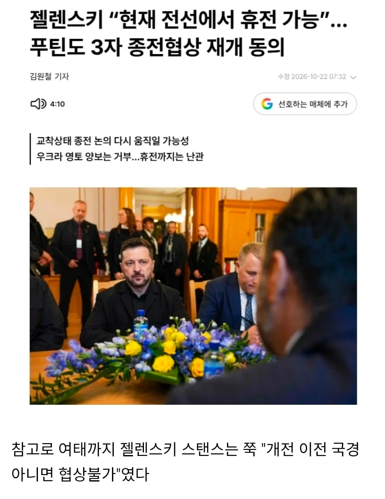

젤렌스키 "현재 전선에서 휴전 가능"
댓글


러시아 입장에선 굳이..? 말려죽일 각이 이제 보이는데? ㅋㅋㅋ
러시아도 슬슬 끝내고 싶긴 할 거임.
다만 뭘 뜯던 간에 이득이 되는 건 받고 끝내겠지.
러시아도 같이 말라죽고 있는 중이라
특히 정유시설들 박살나서 기반산업 다 없어지기 전에 끝내고 싶을껄
내가 ㅈ틴이면 어차피경제는 ㅈ박았고 2년더 연장하면서 우크라더먹을각보다가 먹으면 오케이땡큐 못먹으면 2년뒤 미국대선카드로쓸듯
오히려 러시아가 ㅈㄴ 급하지
경제도 미래가 없어 먹은 영토는 실속도 없고 외교적으로는 출구전략이 중국이랑 북한임
뭐가 굳이겠냐
러시아 경제 호황기 아니었어?
어디서 본거같은데
겉으로만 그런거 아닌가 군수쪽에만 돈이 돌아서
상식적으로 군대에서 2030청년들 다 갈려나가는데 호황이겠음...
원자재 뛰고 군수물품팔고 석유값 폭등하니까 대충 그렇게 보이겠지
기업, 인프라, 수출 하나도 늘어난게 없는데
징집비용으로 화폐를 엄청 뿌리면 인플레가 일어남
사실상 짐바브웨 하는 짓이랑 비슷함
드론으로 계속 기반시설 타격하는데 전선은 크게 변화가 없으니 이거라도 먹고 종전하는게 이득 아닐까
그럼 내일 대원전선 풀매수 각인가여???
드디어 끝인가
10월 22일
이미 쭉 지나가고 무덤덤해진 내용임
아쉽고
언젯적 뉴스냐
개드립은 단군 이래 모두 그놩이고 채신임
기사 보니까 10월 22일이네
일주일 전이면 그래도 최신이지
에효
이제 지겹다 이런뉴스
걍 뉴스 내지도말어
맨날 말장난
10월 22일
푸틴도 정권 유지때문에 전쟁한건데.. 굳이 멈출리가 있나.. 땅주면 휴전으로 말 바꾸겠지
젤렌스키는 예전부터 전선까지 인정하려고 했음
근데 푸틴이 루한스크 도네츠크 포함 4개 지역을 전부 러시아에 바치는걸 주장하고 있음
푸틴이 전선으로 만족할 사람이 아님
이제 돈 나올 곳도 없는데, 그만해야지.
우크라이나가 러시아 땅이 되는구나 지도자 잘못으로 ㄷㄷ
뭔 병신같은 소리냐 전쟁 일으킨 푸틴 잘못이지 도대체 ㅋㅋ
우크라가 나토 가입한다고 염병 떨다가 쳐 맞았자나
야 시발 주권국가가 뭔지 몰라?
전지적 푸틴 시점에서 해석하네 ㅋㅋ
우러 전쟁이 22년에 시작된거같냐?
이미 14년부터 국경지역 교전으로 8년동안 죽은사람이 만명이 넘어
누가 보면 젤렌스키가 아무런 이유없이 나토가입을 입에 올린줄 알겠네
그래서 22년 당시에 우크라이나가 나토 가입이 현실적이긴했어?
뭐 하나 구체적으로 진행된것도 없는 상태에서 전쟁일으킨걸 우크라이나 탓 하는꼬라지 보면 이게 사람새끼 지능인지
일단 전쟁시작한 푸틴개새끼! 박고 시작
그 건도 따지고 올라가보면 우크라이나가 이전에 체결된 조약 ㅈ까라 시전한게 먼저긴 함
소련 해체하고 크림반도는 우크라이나 싫다고 자체 공화국으로 독립선포까지 했는데 우크라이나 측이랑 드잡이질까진 하고싶지 않아했던 당시 러시아는 크림을 우크라이나 영토로 인정하는대신 흑해함대가 세바스토폴항에 계속 주둔하는걸로 딜을 봤었음
근데 2009년에 갑자기 흑해함대 짐싸서 나가라고 하니까 러시아측에 명분을 쎄게 줘버린거지
국가의 방향이 어디로가던 그건 그 국가의 주권인건 맞는데 이미 체결된 계약을 깰거였으면 상대가 어떻게 나올지도 생각을 했어야한다고 봄
흑해함대 계속 주둔이 아니고 2017년까지 임대였고
우크라가 2009년에 나가라고 한거 아니고 더이상 연장이 없다고 한거임 검색이라도 하렴...
그렇네? 찾아보니 2009년에 임차연장 거부했다가 다음해에 2042년까지 연장계약 양국이 합의 했네? 근데 러시아는 임차연장 한번 거부맞으니까 꿍해져가지고 풀악셀을 쳐밟았구만
ㅋㅋㅋㅋㅋㅋㅋㅋㅋㅋ 강대국이 세우는 명분을 그대로 믿고 아주 잘하는 짓이다 ㅋㅋㅋ 나중에 중국에 그대로 당하고도 잊지말고 중국탓하지 마라ㅋ
ㅇㅁ없음?
개드립에선 그저 "기분이 상해서" 우크라이나 잘못임 ㅋㅋㅋㅋㅋ 나중에 중국에 제주도 먹혀도 중국욕하지말고 제발 지금 지가 한 말 잊지말고 지도자 잘못뽑은탓하길 ㅋㅋㅋㅋ
주말 카더라=주식
끝나도 이란 전쟁이 더 크게경제파괴중
갈수록 우크라이나에 불리할테니까... 인구도 거의 절반됐다는데
젤렌스키가 현재 전선에서 휴전하는 거 수용할 수 있다고 한 거 한참 됐을텐데?
위캔나스닥많이올랐네
진짜 ㅈㄴ무능하다
죽은 사람들만 불쌍한거지 에효 ㅠㅠ
휴전 이야기 나온이유가 일론머스크가 10월 초에 경고차원으로 스타링크를 제한걸어서 우크라이나군 전체가 한순간에 마비됐던 전적이 있음
스타링크 끊는 순간 방공망이나 gps는 물론 드론 조종 조차도 못하게 됨
물론 일론머스크의 독단적인 시행보단 미국 정부 연계하에 우크라이나에게 확전시키지 말고 수비만 하라고 경고 메시지를 준거라고 본다만 스타링크 통제 권한은 미 정부가 아닌 일론머스크 개인에게 있음
그렇기에 일론머스크가 딸깍 한번만해도 바로 gg쳐야하는게 우크라이나의 현실임
현재 스타링크를 다시 풀어줬지만 속도제한을 걸어서 우크라이나가 장거리 드론 운용이나 기습운용같은걸 못하게 되었음
말그대로 자국 수비, 정찰용으로밖에 못씀
우크라이나가 드론이 어쩌고하지만 실상은 미국 위성망 기술과 제공권이 없으면 rc 장난감에 불과한지라...
미국도 그렇고 러시아도 그렇고 나름대로 우크라이나 장난질에 잘 인내하고 대응도 잘했다고 봄
러시아도 스타링크 위성파괴하면 우크라 드론들 바로 컷낼수 있는데도 확전 우려해서 최대한 미국을 안거드렸고
미국도 우크라이나가 자꾸 위성망 이용해서 드론으로 뇌절치니 러시아가 임계점 넘기전에 컷냄
우크라이나가 전선유지가 안되기 시작하니 드론 장난질로 확전유도했던건데 일론머스크 딸깍에 컷난 이상
땅 더 먹히기전에 최대한 몸값불려서 끝낼수밖에 없음
우크라이나의 마지막 희망은 미국이 러시아 상대로 괜찮게 딜해주는건데...
우크라이나에게 남음 카드가 거의 없음
우크라 꼬라지보면 그냥 먹히면좋겠음
징징대는거 안 먹히니까 '그만하자노'